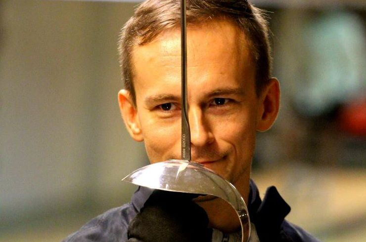

Säiläklubi on vantaalainen, säilämiekkailuun erikoistunut miekkailuseura.
Oletko 10-15 vuotias tyttö tai poika? Tule mukaan oppimaan, kuinka väistää vastustajan iskut ja lyödään oma riposti keskelle päätä.
Kevään alkeisryhmä aloittaa keskiviikkona 8.1.2014. Ilmoittautuneet otetaan mukaan ilmoittautumisjärjestyksessä, joten ilmoittaudu heti!
Miekkailu on nopeatempoinen, sekä älyä että fysiikkaa haastava laji. Lajin perinteet ovat eurooppalaisessa kaksintaisteluperinteessä, mutta nykyisin se on moderni ja suosittu väkivallaton kamppailulaji. Miekkailijan käytökseen kuuluu aina vastustajan kunnioitus sekä pyrkimys voittaa vastustaja nopeudella, älyllä ja tekniikalla, ei niinkään voimalla.

Mika on säilämiekkailun 8-kertainen miesten Suomen mestari ja kaksinkertainen Pohjoismaiden mestari. Hän toimii myös Suomen miekkailu- ja 5-otteluliiton säilämiekkailun valmentajakouluttajana. Suomen selkeästi kokeneinen säilävalmentaja tuo nyt taitonsa Säiläklubiin.